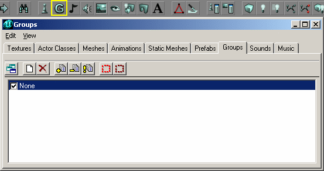

Group Browser
The Group Browser is one of several Resource Browsers in the UnrealEd Interface. By default it is docked in the Master Browser. It allows you to save groupings of objects you have selected in the main views (like a cluster of brushes) and toggle their visiblity in the editor. This can be useful in a large complex level for isolating a particular area to work with, or grouping objects meant for detail (like decor, furniture, etc) and hiding them from view so you can see underneath more clearly.

Group Browser |
Opening
The Group Browser is accessed either of two ways:
- Do UnrealEd Main Menu → View → Group Browser
- Press the Group Browser button in the middle of the toolbar at the top of the Editor window. It looks like a "G".
Browser Toolbar Buttons
The Group Browser has the following buttons (from left to right) in its toolbar:
- Dock / undock from browser window
- New Group
- Delete
- Add Selected Actors to Group(s)
- Delete Selected Actors from Group(s)
- Refresh Group List
- Select Actors in Group(s)
- Deselect Actors in Group(s)
Notes
The names used for groups are stored by UnrealEd in the same way as names for actor properties. This is why you may see the [Name case jump]? effect on names you don't think you've used already. There is probably no danger in using a name as both a group name and, say, a trigger tag, since the two systems are totally unrelated.
An actor's membership of groups is stored in Object → Group. This appears to have a limited length. Once an actor belongs to many groups, you may find adding it to further groups problematic (the group name may be truncated and appear as a new group in the browser).
Adding a group to an actor's Group property will not add that group to the group browser, though if you then create a group of the same name that actor will act as a member of it.
The visibility checkboxes in the group listing work inverse to what one might expect: if any of an object's groups are unchecked, that object is hidden. You can't use one group to hide a large set of items and then another group to show a subset of those items.
Navigation
<< Main UnrealEd Interface
< Previous Actor Class Browser | Music Browser Next >